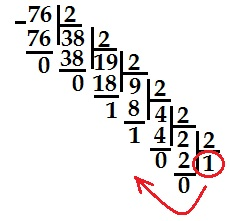

Информатика
Приобретение теоретических знаний и практических навыков необходимо для успешной сдачи ОГЭ.
Система счисления (СС) - это система записи чисел с помощью определенного набора цифр. CС называется позиционной, если одна и та же цифра имеет различное значение, которое определяется ее местом в числе.
В шестнадцатеричной СС основа - это цифры 0,1,2,3,4,5,6,7,8,9,10,11,12,13,14,15 с соответствующими обозначениями 0,1,2,3,4,5,6,7,8,9,A,B,C,D,E,F.
Двоичная СС - это система, в которой для записи чисел используются две цифры 0 и 1. Основанием двоичной системы счисления является число 2.
При переводе в 10-ую систему разложить переводимое число по разрядам. Пример перевода из двоичной системы счисления: 1000=1*2^4+0*2^3+0*2^2+0*2^1+1*2^0=1*16+0*8+0*4+0*2+1*1=17
Пример перевода из шестнадцатеричной системы счисления: ABC=A*16^2+B*16^1+C*16^0=10*162+11*161+12*16
Для перевода целых чисел десятичной системы счисления в другую систему счисления последовательно выполняют деление нацело на основание новой СС, пока не получат частное, меньшее этого основания. Число в новой СС записывают, начиная с последнего частного, добавляя к нему остатки.
Например: Необходимо перевести число 76 из 10-ной в 2-ую СС.
Алгебра логики (алгебра высказываний) — раздел математической логики, в котором изучаются логические операции над высказываниями.
Базовыми элементами, которыми оперирует алгебра логики, являются высказывания. Высказывания строятся над множеством {B, ¬, ∧, ∨, 0, 1}, где B — непустое множество, над элементами которого определены три операции:
а логический ноль 0 и логическая единица 1 — константы.
Алфавит языка программирования — это все символы или комбинации символов, которые используются при программировании на этом языке.
Мощность алфавита — это количество символов в алфавите, которое вычисляется по формуле: N = 2^i , где i — информационный вес символа.
Информационный объём 1 сообщения вычисляется по формуле: I = К · i, где I — информационный объем сообщения, K — количество символов в сообщении, i — информационный вес одного символа.